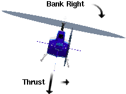

Here you will learn how to fly the aircrafts, everything from
basic flight manuvers like take offs and landings to navigation and
rescue.
Search and Rescue is not, by most standards, a realistic flight
simulator. It focuses more on entertainment rather than authenticity,
so flying is not too difficult and the learning curve is simple.
Pitch
The pitch is the angle of the helicopter's nose with the
horizon, the pitch can go down or up. Pitch is the most sensitive and
oscilating aspect of controlling the helicopter. When the helicopter
pitches down it causes the direction of the thrust to point sligntly
behind it which gives it a compoent of thrust that pushes it forward.
You can control the pitch with the joystick's pitch axis
or by pressing DOWN or UP. The pitch
can also be fine tuned using the elevator/pitch trim by pressing
HOME or END (CTRL + HOME to
center the trim).
|
|
Bank
The bank is the tiling of the helicopter to either side. This
affect is slightly more complex than the pitch. If the helicopter
tilts to the side (banks) with the pitch remaining
level, then the thrust from the helicopter's main rotor causes the
helicopter to fly sideways. If the helicopter tilts to the side
(banks) and is pitched forwards then the helicopter's main
rotor creates thrust in many directions causing it to
turn instead of just flying sideways.
You can control the bank with the joystick's bank axis
or by pressing LEFT or RIGHT.
|

|
Heading
The heading is the direction that the helicopter is flying,
it can be changed by the tail rotor. The tail rotor adds thrust or
eliminates thrust that counteracts the main rotor's rotational
momentum. This causes the helicopter's direction to change.
If the helicopter has forwards or sideways momentum and the
heading changes then it causes a great loss in momentum in
the direction in question. This is why heading should be changed in
small amounts.
You can control the heading with the joystick's heading axis
or by pressing CTRL + LEFT or CTRL + RIGHT.
If your joystick does not have a heading axis then press and hold
the joystick's rotate modifier button (see joystick button
mappings) in conjunction with the bank axis.
|
|
Throttle/Collective
The throttle controls how fast the engine spins the rotors.
The faster the rotors spin the more power is available to create thrust.
This thrust is used primarly to gain altitude. The tilting of the main
rotor causes the thrust to be directed in the direction you want to
move.
The throttle controls only one aspect of thrust, the
collective fine tunes the amount of thrust resulting from the
power of the spinning rotor blades. The collective adjusts the
angle of the rotor blades (see diagram on the right) to produce more or
less thrust, basically it fine tunes the amount of thrust so that the
altitude can be controlled with precision.
You can control the collective with the joystick's
throttle axis or by pressing PGUP or PGDN
(holding down SHIFT increases the amount of change).
|

|
Once the engine is on and you are familiar with the helicopter's
controls (see above), slowly increase the throttle/collective
until you begin to lift off the ground. Make sure that you are
at least 100 feet above the ground before you attempt to tilt the
helicopter and begin moving.
Once the helicopter is airborne, you can tilt the helicopter
pitch down to begin moving forwards. Pitch down just a few degrees to
see how much of a momentum it creates.
Landing
Landing a helicopter is more challenging than simply taking off. To
land a helicopter, first you must find a spot to land (such as a
helipad), manuver the helicopter over it (the approach), and then set
it down gently.
In most cases it is easiest to land using the spot view
(press F3). Adjust the
camera position so that you see both your helicopter and the
desired landing site (usually a helipad) at once (see image on the
right).
As you approach the helipad, slowly reduce your speed (level the
helicopter to minimize any tilt) and reduce the collective until you
slowly begin to descend (watch the rate of climb (ROC) and the
altitude closely). Make sure that you stay a safe distance above
the ground until you are over the helipad.
With the airspeed decreasing, pitch down slightly to apply a
small amount of thrust for forward motion as needed. You can adjust the
heading as needed, but do not bank too much or else the helicopter will
move sideways due to the slow speed. If the helicopter has retractable
landing gears then make sure the landing gears are down (press
G).
 As you descend and get closer to the ground you will see the
helicopter's shadow and prop wash, use it as a guide to judge where you
are with respect to where you want to land.
As you descend and get closer to the ground you will see the
helicopter's shadow and prop wash, use it as a guide to judge where you
are with respect to where you want to land.
Slowly position the helicopter over the landing site, keeping a safe
altitude above the ground (at least 20 feet). Some helipads can be
located on top of buildings, mountains, vehicles, or vessels, make sure
that you remain a safe altitude above the helipad to avoid hitting any
obstructions along the way.
Tilt the rotors sparingly to gently nudge the helicopter into position.
Once the helicopter is over the landing site decrease the collective and
let the helicopter touch down.
Once landed at a helipad, you can refuel, repair, and drop off
passengers (press R). Note that not all helipads support
refueling, repairs, or allow the dropping off of passengers.
 You can land on virtually any hard surface. If the aircraft has floats
then you can also land on water. Most building rooftops are landable
(even ones without helipads).
You can land on virtually any hard surface. If the aircraft has floats
then you can also land on water. Most building rooftops are landable
(even ones without helipads).
You can adjust the damage resistance by going to
Options->Simulation... The damage resistance determines how
"hard" you can hit the ground and/or at how steep of an angle.
For a complete list of keyboard keys see
Keyboard Keys List
[